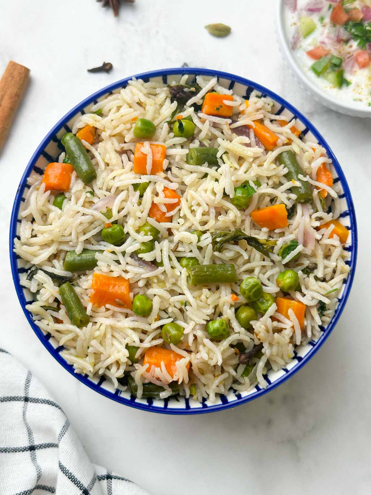

Home
Vegetable Pulao

Vegetable Pulao is a fragrant and colorful rice dish made by cooking basmati rice with a variety of mixed vegetables and aromatic spices.
Ingredients
- Basmati Rice - 1 cup
- Mixed Vegetables (carrots, peas, beans, bell peppers) - 1 cup, chopped
- Onion - 1 medium, thinly sliced
- Garlic - 2 cloves, minced
- Ginger - 1 inch piece, grated
- Cumin Seeds - 1 tsp
- Cloves - 2-3
- Bay Leaf - 1
- Cardamom Pods - 2-3
- Turmeric Powder - 1/2 tsp
- Garam Masala - 1 tsp
- Salt - to taste
- Water - 2 cups
- Oil or Ghee - 2 tbsp
- Fresh Coriander - for garnish
Steps
- Rinse the basmati rice under cold water until the water runs clear. Soak the rice for 20-30 minutes, then drain.
- In a large pan, heat oil or ghee over medium heat. Add cumin seeds, cloves, bay leaf, and cardamom pods. Sauté for a minute until fragrant.
- Add the sliced onions and sauté until golden brown. Add the minced garlic and grated ginger, and cook for another minute.
- Add the chopped mixed vegetables and sauté for 3-4 minutes until they start to soften.
- Add turmeric powder, garam masala, and salt. Mix well to coat the vegetables with the spices.
- Add the drained rice to the pan and gently stir to combine with the vegetables and spices.
- Add 2 cups of water and bring to a boil. Once boiling, reduce the heat to low, cover the pan with a tight-fitting lid, and simmer for 15-20 minutes, or until the rice is cooked and the water is absorbed.
- Turn off the heat and let the pulao sit, covered, for an additional 5 minutes. Fluff the rice with a fork before serving.
Serving
Garnish the vegetable pulao with fresh coriander and serve hot with raita or a side salad.